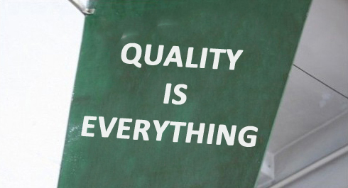
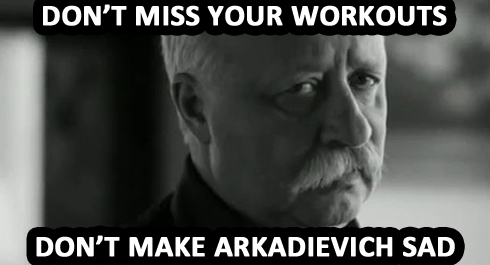

Another 7 days of our program are left behind, but as the new week starts, we have a new topic to discuss. Today we will talk about two basic principles, without whose you would hardly succeed! hese two principles are Quality and Persistence. Let’s consider each of them in detail.
Quality

Be always focused on performance quality, not on quantity! As the proverb says "Don't count the rep, make every rep count!"
1. When you’re doing an exercise, you have to focus on the process. There’s no need to think about how many reps or how many circuits are left. Moreover you don’t have to think what you’ll do after workout and what else should be done today. When you train – you train! Consider this as a process of meditation and give it a due attention! This approach will not only increase the efficiency and reduce the risk of being injured, but it will also bring you a peace of mind, because you’ll be able to use your trainings as a way to leave the problems and duties of the contemporary world for some time, and dive into your own world of self-perfection, where you’re getting better every day.
2. It would be great view yourself. Try to record video of you performing the exercises, as it may give you a view from a different angle and let you objectively estimate your technique and mistakes you've been doing. Sometimes we are totally unaware about them until someone points out!
3. Don’t get upset, if your technique isn’t perfect or there are some gaps in it in the beginning (well, for example, your pelvis is weighed down during the push-ups). If you’re just starting your trainings, these kinds of shortcomings can happen simply due to the muscles, which are not accustomed to this exercise. On the other hand, if you’re not a beginner, the shortcomings can be caused by doing of the exercise with the wrong technique for a long time, and getting you accustomed to do it that way.
There is, still, a huge difference between understanding what you are doing and simply repeating, but we will talk about this subject in the upcoming infoposts. Now we shall proceed to the second important principle.
Persistence

Don't be upset, but only a regular training can help you to achieve something. To illustrate this idea, let’s imagine that your desirable result is a brick house. It is unlikely that you would be able to build a whole house from the ground in one day, but if you still try, you’re much more likely to rupture yourself rather than succeed in it. But if you’ll be working on the construction of your house day by day, brick by brick, then, over the time, you will build it. Your training sessions are those bricks that you use to get the desirable results, therefore, if you won’t train regularly, the house won’t build itself, and there will be no result.
Besides, it’s impossible to understand a lot of the technique nuances deeply, if the exercises are not done regularly! Conversely, the more you train, the better you know your body, know how it works and you can gradually correct the shortcomings in technique by focusing on a particular moments, you’ll learn to feel and involve certain groups of muscles, which you didn’t notice before. Sooner or later (depending on your luck) you will succeeded and get the result that you dreamed of. And it will happen just because you gradually, step by step, made it towards your aim and getting obstacles out of your way.
A few words in the conclusion
There are moments, when it’s difficult to concentrate on exercise performance and this simply means that it is not the best time to train. There are days, when you absolutely don’t have time to train, but it only means that you’ll lay another brick tomorrow. In the long term these small breaks doesn’t matter. Sahara Desert doesn’t become less of Sahara Desert even if it’s raining sometimes. Because all other time it’s not raining! So, if you train regularly and keep an eye on a performance quality of your exercises, it’ll be all right and your goals will be reached!